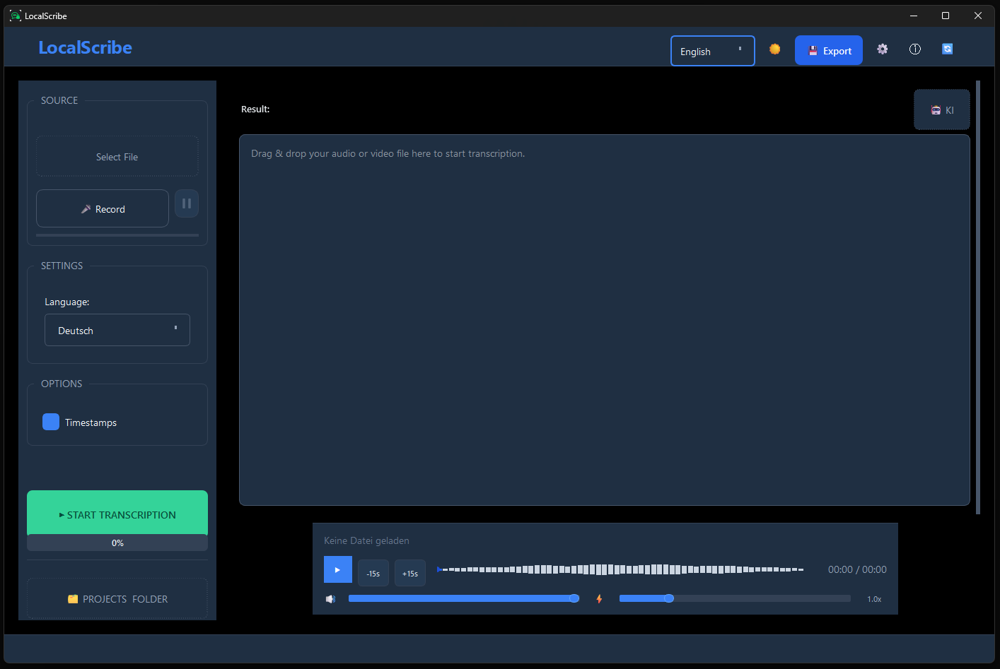

AI Transcription.
Local on your PC.
Your data stays with you.
Windows software for local AI transcription — no cloud, no subscription. Maintain your professional confidentiality obligations.
LocalScribe is a Windows application for local AI transcription, powered by OpenAI Whisper Large-v3, that processes audio files entirely offline on your own PC — no cloud, no subscription, from €39 as a one-time purchase.
incl. 24 months of updates • No subscription
I am a:

Why Is Cloud Transcription Problematic for Confidential Conversations?
Cloud-based transcription services like Otter.ai or Amberscript transmit audio data to external servers. For professionals bound by confidentiality obligations — doctors, lawyers, therapists — this creates a data protection violation. LocalScribe solves this by processing everything locally on the Windows PC.
Professionals with strict confidentiality obligations — such as doctors, therapists, and lawyers — need to carefully evaluate the use of external cloud services. Local open-source solutions are often too complex, while traditional offline software typically comes with high upfront costs.
100% Offline
Your audio files remain on your machine; transcription runs locally, not in the cloud.
GPU-Accelerated
GPU-accelerated (NVIDIA CUDA + AMD/Intel Vulkan): LocalScribe transcribes significantly faster than real-time on compatible systems.
One-Time Purchase
No hidden subscription costs. Pay once, use forever.
Windows Installer
Simple next-next-finish installation. No programming knowledge or command line required.
Meetings & Screen Recordings
Recorded a Zoom, Teams or Google Meet session? Simply load the file into LocalScribe — transcription runs fully offline, no cloud upload needed.
Lectures & Seminars
Students can transcribe recorded lectures, seminars or online courses automatically and export them as searchable text.
Podcasts & Content
Content creators can transcribe podcasts, YouTube videos or interviews — for subtitles, blog posts or show notes, without subscription fees.
For the Privacy-Conscious
Not just for professionals with confidentiality obligations: anyone who doesn't want their conversations sent to the cloud will find LocalScribe the simplest offline solution.
More Than Just Transcribing Audio Files
LocalScribe goes beyond audio files — record your screen, capture meetings, or speak directly into your microphone. Everything is processed locally on your PC.
Transcribe Screen Recordings
Use the built-in Windows recorder (Win+G) or a tool like OBS to capture your screen — LocalScribe then transcribes the audio completely offline.
Automatic Meeting Minutes
LocalScribe generates an AI summary from the transcript — perfect as meeting minutes for Zoom, Teams or Google Meet calls.
Speak Directly Into the Mic
No recording tool needed: dictate directly into LocalScribe. Ideal for notes, memos or spontaneous ideas — everything stays on your PC.
All Common Formats
MP3, WAV, M4A, MP4, WebM and many more are supported — whether it's an audio file or a video recording of a meeting.
What Makes LocalScribe Better Than Cloud Transcription Services?
LocalScribe uses OpenAI Whisper Large-v3 for AI transcription directly on the PC. The software supports over 99 languages, GPU acceleration via NVIDIA CUDA, and export as PDF, DOCX, TXT, or SRT — all without an internet connection. Speaker diarization is planned for the Professional Edition.
| Criterion | Cloud Services | Legacy Software | LocalScribe |
|---|---|---|---|
| Data leaves your PC | ❌ Upload required | ⚠️ Depends on version | ✅ Never |
| Professional confidentiality compliant | ❌ Requires additional review | ⚠️ Depends on product | ✅ Yes |
| Price | Ongoing subscription costs | Often high upfront cost | €39 (Early Access) |
| Data Processing Agreement required | Yes | Depends on version | No (local transcription) |
| GPU Acceleration | No (server-side) | No | ✅ Yes (NVIDIA/AMD/Intel) |
Is LocalScribe GDPR-Compliant and Suitable for Professionals with Confidentiality Obligations?
LocalScribe processes all audio data exclusively on the user's local Windows PC. No data is transmitted to external servers. The software is therefore designed to support GDPR-compliant workflows and is suitable for professionals with strict confidentiality obligations, including doctors, lawyers, and therapists.
LocalScribe was developed specifically for professions with strict confidentiality obligations. Support compliance with GDPR and professional secrecy requirements — sensitive content never leaves your machine during transcription.
Your patients, clients, and mandates trust you. LocalScribe protects that trust.
LocalScribe was built specifically for professions with strict confidentiality obligations — so you can use AI without risking your professional secrecy duties.
How Much Does LocalScribe Cost and Why Is There No Subscription?
LocalScribe costs a one-time fee of €39, including 24 months of updates — no hidden costs, no subscription. Compared to cloud services like Otter.ai (approx. €20/month), the investment pays for itself after just two months.
No subscription, no hidden costs. Get started today with Early Access.
Early Access
Basic Edition — Transcription + Export
incl. VAT · Early bird price – from Q3 2026 expected €79
One-time payment. Permanent use of the purchased version.
- ✓ 100% local processing
- ✓ GPU acceleration
- ✓ 24 months of updates included
- ✓ GDPR & confidentiality compliant
- ✓ Unlimited transcriptions
- ✓ Export (TXT, SRT, Markdown, JSON, PDF)
- ✓ AI Summary
- ✓ Chat with Document — Ask questions (local, no cloud)
ⓘ You will receive your download link immediately after purchase by email.
↑ Please tick the checkbox above first
Secure payment via Stripe. Cancellation Policy
Professional
Advanced Edition with Pro Features
Expected from Q4 2026
- ✓ Everything in Early Access
- ✓ Speaker diarization
- ✓ AI summaries
- ✓ Domain vocabulary
- ✓ Priority support
🔔 Speaker diarization is coming in the next major update.
Available from Q4 2026
What does switching cost you?
Compare LocalScribe to ongoing cloud costs.
Cloud subscription (approx. €20/month)
€240
LocalScribe (one-time)
€39
You save €201!
Frequently Asked Questions
After the one-time online activation, LocalScribe works completely offline. A brief license check occurs at startup — without internet, the software continues to work for up to 30 days.
For optimal speed, we recommend an NVIDIA GPU (RTX 3060 or better). The software also runs on CPU, though somewhat slower. Minimum requirements: Windows 10/11, 8 GB RAM, 5 GB free disk space.
No audio or text content is transmitted to external servers during transcription. All AI processing runs locally on your hardware. External services are only used for purchase, licensing, and email delivery.
The software continues to work without restrictions — you can use LocalScribe indefinitely. Security and compatibility updates are not affected. For new features, you can optionally purchase an update pass.
The licence is a single-device licence. If you change devices, our support team at support@localscribe.de will help you transfer it to your new PC — without purchasing a second licence.
Yes. Record the meeting as an audio or video file (using Zoom's, Teams' or Google Meet's built-in recording feature) and then load the file into LocalScribe. Transcription runs completely offline on your PC — no cloud upload, no data sharing.
No. LocalScribe is for anyone who values privacy — from students recording lectures, to freelancers and remote workers who need meeting transcripts, to content creators transcribing podcasts or videos. Professional confidentiality compliance is a benefit, not a requirement.